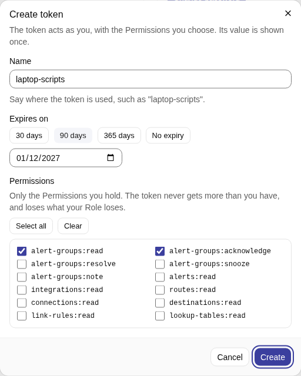
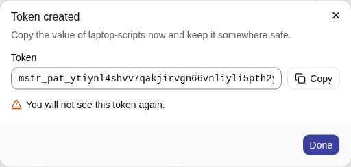
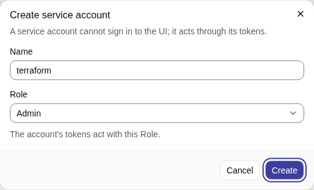
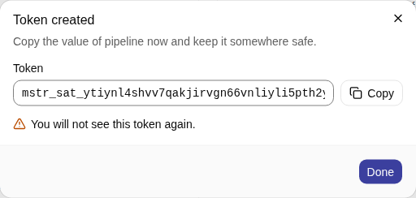
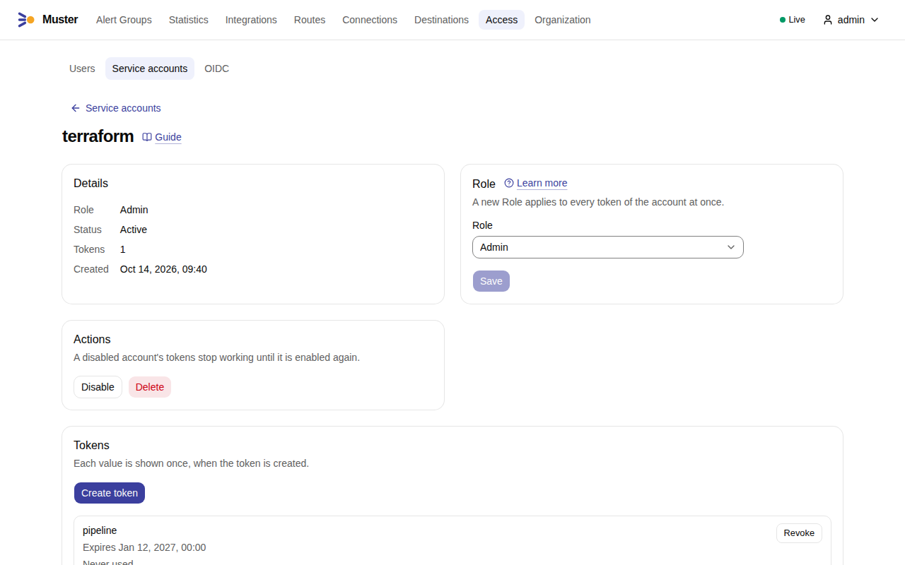

API tokens and automation¶
Everything the web UI does, a script can do through the API, as a person or as a non-person identity. This page shows
how to get a token, how to call the API, and what to expect from it. The API reference lists
every operation, its Permission and its answers; the binary serves the same specification at /api/v1/openapi.yaml.
Two kinds of token¶
A Personal access token acts as a User. It has the Permissions you choose, never more than you hold, and it loses
what your Role loses. Use it for your own scripts. Its prefix is mstr_pat_.
A Service account is an identity that is not a person, such as Terraform or a pipeline. It has a name, a Role and
any number of tokens, whose prefix is mstr_sat_. It cannot sign in to the web UI and has no Account links.
A Service account cannot become an Owner
The Owner of an Alert Group is always a User. Acknowledge from a Service account is refused with 409 and the code
owner_must_be_user. It may Resolve, Snooze and add Notes, and the Timeline shows the Service account as the actor.
A Personal access token acts as its User, so acknowledging with one makes that User the Owner.
An Integration token (mstr_int_) is a third kind and is not for the API: it sends alerts and Heartbeats only, and
the API does not accept it. See Connect Alertmanager.
The prefix mstr_ and the kind in it let secret scanners find a token that leaked into a repository. If one does,
revoke it.
Create a Personal access token¶
Tokens are created in the web UI. A token cannot create or revoke another token, so there is no API call to start from nothing.
- Open Profile, Personal access tokens, and select Create token.
- Give it a Name that says where it is used, such as
laptop-scripts. - Under Permissions tick what the script needs. You see only the Permissions you hold. A script that reads Alert
Groups needs
alert-groups:read; one that also acknowledges needsalert-groups:acknowledge. -
Choose Expires on: 30 days, 90 days, 365 days or a date of your own. A token may have No expiry (
token.expiryis none by default), but the page warns about a token that never expires: choose a date.
-
Select Create. The dialog shows the token once. Copy it with Copy before you select Done: only a hash is kept.

The list shows when each token was created, when and from which address it was last used, and when it expires. Revoke stops a script that uses it at once. The Audit log records a request made with a token as "alex via token laptop-scripts".
Create a Service account¶
- Open Access → Service accounts and select Create service account.
-
Give it a Name and a Role: Admin, Responder or Viewer. You can give only a Role whose Permissions you hold. Select Create.

-
On its page, under Tokens, select Create token, give it a name and an expiry, select Create, and copy the value once.

-
The page of the Service account shows its Role, its status and its tokens, with Disable and Delete.

Its tokens act with the Role of the account, and changing the Role changes every token at once. To change a token without a gap, create the second token, switch the pipeline to it and revoke the first. Disable stops all its tokens until you Enable it; Delete revokes them for good.
Call the API¶
Send the token as a bearer token. The API is under /api/v1 of the address people open, MUSTER_PUBLIC_URL:
MUSTER=https://muster.example.org
TOKEN=mstr_pat_...
curl -sS -H "Authorization: Bearer $TOKEN" "$MUSTER/api/v1/alert-groups?status=firing&limit=20"
The answer is JSON: items and next_cursor. A request with no token, or a wrong one, gets 401; one with a token
that lacks the Permission gets 403. Every operation in the reference names the Permission it needs.
Snooze the Alert Group AGK7M3QX9P2RTA until a time (the token needs alert-groups:snooze):
curl -sS -X POST -H "Authorization: Bearer $TOKEN" -H 'Content-Type: application/json' \
-d '{"until": "2026-10-20T08:00:00Z"}' "$MUSTER/api/v1/alert-groups/AGK7M3QX9P2RTA/snooze"
A call on the interactive path, such as a check of a Connection, answers 503 with Retry-After when Muster's limit
toward the messenger leaves no room within 5 seconds (delivery.interactive_budget); retry after the pause.
A few operations need the web session and refuse a token with 403 (session_required): changing your own password,
TOTP, Account links and tokens.
Conventions¶
- Identifiers
- URLs carry the
public_idof a resource, such asAGK7M3QX9P2RTA, never the#Nof an Alert Group. - Pagination
limitis 50 by default and at most 500 (api.page_size). A page carriesnext_cursor; send it back ascursorfor the next page. There are no offsets.- Changing configuration
-
Routes, Destinations, the Organization and other configuration carry an
ETag, in a header and in the body. Read it, then update withPUTandIf-Matchset to it. A stale value gets412, a missing header428. This stops two writers from overwriting each other.curl -sS -D - -o /dev/null -H "Authorization: Bearer $TOKEN" "$MUSTER/api/v1/organization" | grep -i '^etag'Then send the changed Organization with
-X PUT -H 'If-Match: <that value>'. An omitted optional field keeps its stored value, and an explicitnullclears one that can be cleared. - Errors
- RFC 9457 problems (
application/problem+json) with a stabletypeandcode, anderrors[]with a JSON pointer to each invalid field. - Times and units
- RFC 3339 in UTC; durations in whole seconds in
*_seconds; retention in*_days. - Secrets
- Write-only. A read shows whether a secret is set and when it changed, never its value.
Rate limit¶
The API is limited per token: 20 requests per second with bursts of 100 (api.rate_limit), counted on each Muster
replica. A request over the limit gets 429 with Retry-After in seconds; wait that long and retry. Another token is
not affected. Web sessions and ingestion are not limited.
Tokens of OIDC users¶
A Personal access token of a User who signs in through OpenID Connect follows the identity provider. If the provider
refuses the person at a background re-check, the token gets 401 with the code oidc_recheck_required and the text
"Sign in through OIDC to make your tokens work again", and works again after the person's next OIDC sign-in, without a
new token. When the provider granted no offline token, the tokens also stop once the last OIDC sign-in is older than the
Organization's grace period (auth.oidc_token_grace, 7 days; Organization → Security, see
Organization settings). Your profile shows the date until which your tokens work. Service
account tokens are not affected, which is why automation belongs on a Service account.
A web session has its own lifetimes: see Sign-in.